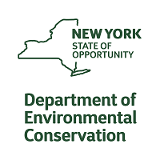
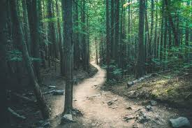
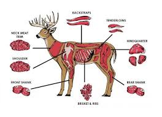

Why people engage in hunting?
-
Hunting is used as a form of wildlife management and aids in the control of populations
- To control the population of predator and non predator species
- To prevent the spread of disease amoung wildlife
- To maintain balanced living conditions for the variety of species in an area
-
To experience nature as a participant
- Going out and not just observing but being apart of nature is a unique and exhilarating experience
-
To take responsibility for ones food
- Many people dislike the treatment of animals in factory settings believing it inhumane
- Hunting is a way to become personally involved in the obtaining of ones food
- Big game animals such as deer can provide around 50lbs of a healthy and sustainable protein source
-
To feel an intmate & deep connection to a place
- Hunting gives you a chance to appreciate animals and nature as it is


